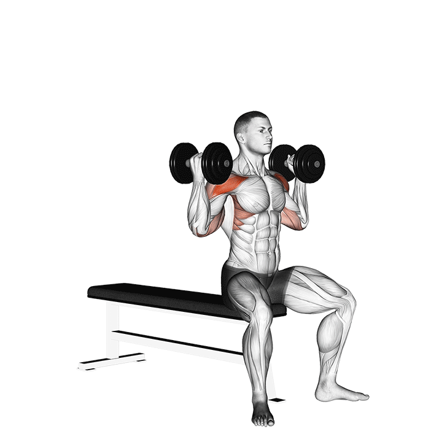
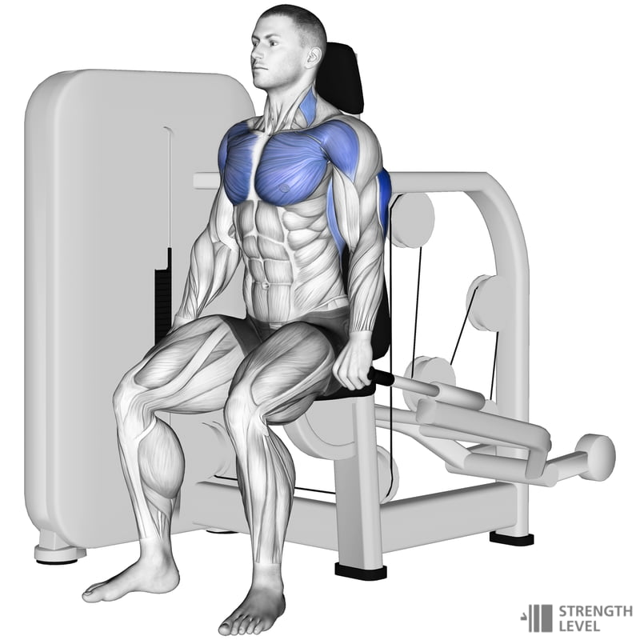
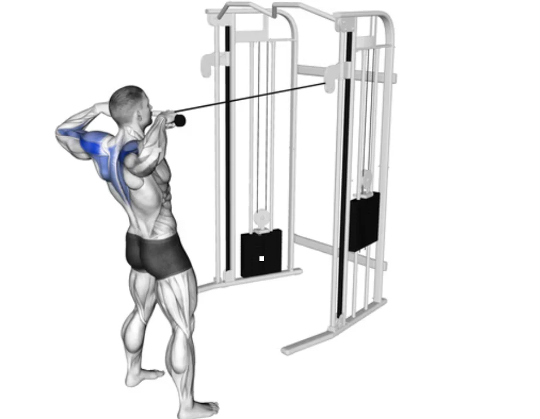
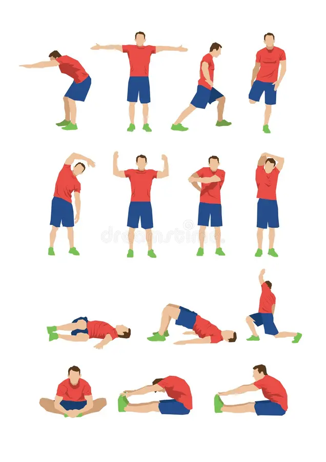

DÍA 2 – TORO SUPERIOR + POSTURA + VELOCIDAD (Ej: Miércoles)
Enfocado en: tren superior, reacción y corrección postural
Calentamiento movilidad hombros + 5-7 min cuerda

Dominadas asistidas o jalón al pecho – 3x10

Press militar con mancuernas (hombros) – 4x10

Fondos asistidos (tríceps y pecho) – 3x10

Curl bíceps con barra o mancuernas – 3x12

Ejercicios posturales (pájaros, facepull con cuerda) – 3x12

Trabajo de reacción (boxeo en sombra con espejo o compañero) – 3x1 min

Estiramiento espalda, cuello y pectorales
⬅ Volver al Inicio